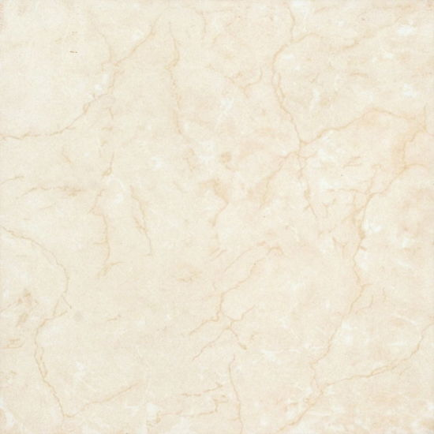
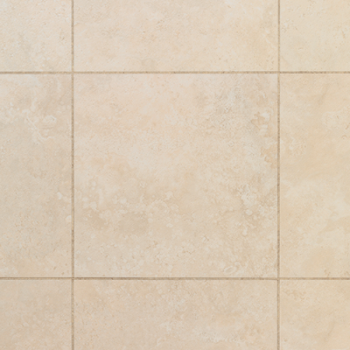
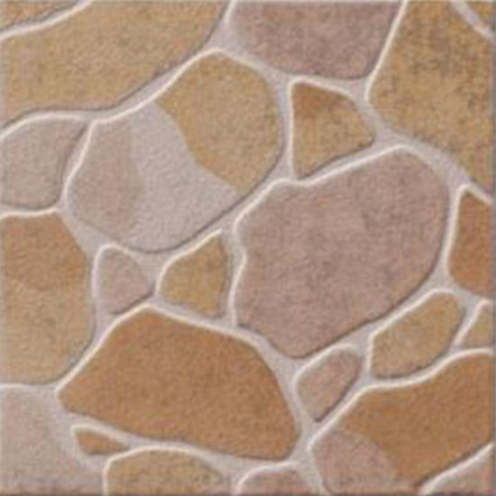
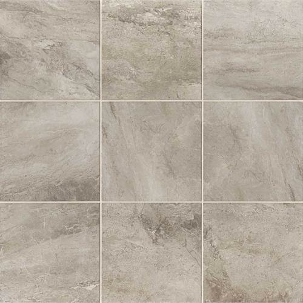
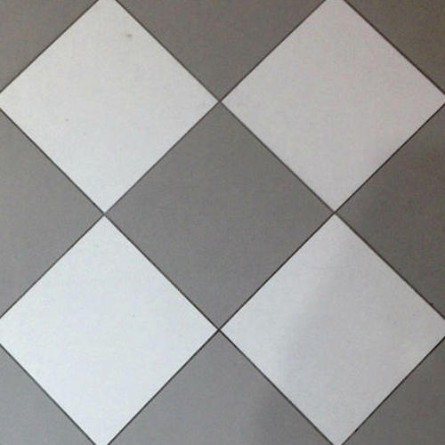
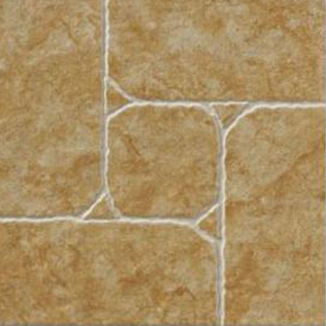

Keramikfliesen: Feinsteinzeug, Steinzeug und Steingutfliesen
Fliesen oder Keramikfliesen sind als Wand- oder Bodenbelag sowohl im Innenraum als auch im Außenbereich gleichermaßen bekannt wie beliebt. Auch als Arbeitsfläche oder Fenstersims sind Keramikfliesen immer gerne gesehen. Doch Fliese ist nicht gleich Fliese. Bei der Keramik gibt es im wahrsten Wortsinne "feine" Unterschiede. Ob Grobkeramik oder Feinkeramik - die Unterschiede entstehen bereits im Herstellungsprozess und gehen bei Keramik immer auf die Rohstoffzusammensetzung und die Feinheit der Körnung zurück. Des Weiteren spielt die Brenntemperatur eine wesentliche Rolle, denn diese schwankt zwischen 800 Grad Celcius und 1.200 Grad. Ebenso das Verfahren zur Formung von Keramikfliesen ist ein Unterscheidungsmerkmal. Ein kleiner Exkurs zum Thema Keramikfliese: das Wort "Keramik" ist abgeleitet von dem griechischen Wort für Ton ("Keramos") und somit deckt der Begriff eine unglaubliche Vielfalt an Produkten ab - vom einfachen Tonkrug über filigranes Porzellan bis hin zu Fliesen und Hightech-Keramik.
Keramikfliesen: Herstellung und Formgebung
Keramikfliesen erfreuen sich vor allem aufgrund ihrer robusten und gesunden Eigenschaften großer Beliebtheit. Kaum ein Baumaterial ist natürlicher als Keramik - die verwendeten Rohstoffe sind mehr oder weniger seit Jahrtausenden unverändert: Hauptwerkstoff in der Herstellung von Keramikfliesen ist Ton, demmineralische Zuschlagstoffe wie Quarz, Feldspat oder Kaolin, mitunter auch Kalzit oder Flussspat beigemischt werden. Damit zählt Keramik wie Glas und mineralische Bindemitteln zu den nichtmetallischen, anorganischen Werkstoffen. Neben einfachsten Keramikerzeugnissen etwa Ziegeln ermöglichen weitere mineralische Zusätze eine Anpassung der Materialeigenschaften ganz nach Wunsch und Anwendungszweck. Neben Ton oder Kaolin gehören Magerungsmittel wie Quarzmehl oder Schamotte zu den gängigen Zusätzen. Oft kommen auch Flussmittel zum Einsatz - wie etwa feiner, nicht wasserlöslicher Mineralstaub (z.B. Feldspat) mit schmelzfördernder Wirkung. Je nach Formgebungsverfahren wird die mineralische Mischung durch Wasserzugabe auf die gewünschte Konsistenz gebracht. Es gilt: Je homogener die Mischung und je länger ihre Lagerung (Mauken), desto besser die Qualität, Verarbeitbarkeit und Plastizität. Grundsätzlich gilt dabei: Je runder die Körner, desto geringer ist die zu erwartende Festigkeit der Keramikfliese. Das wiederum hat den Effekt, dass die Fliese beim Brennvorgang weniger schrumpft. Abgesehen vom handgefertigten Cotto unterscheidet man bei der Formgebung das Strangpressverfahren und die Pulverpressung. Bei der letzten Anwendung lässt sich das Keramikpulver mithilfe hohen Drucks in Formen pressen und anschließend brennen. Im Gegensatz zum Strangpressen wird durch sogenannte Extrusion ein Strang hergestellt. Aus diesem Band werden Einzel- oder Doppelfliesen, sogenannte Spaltklinker, in Fliesengröße zerteilt.

26 EUR

22 EUR

25 EUR

29 EUR

31 EUR
